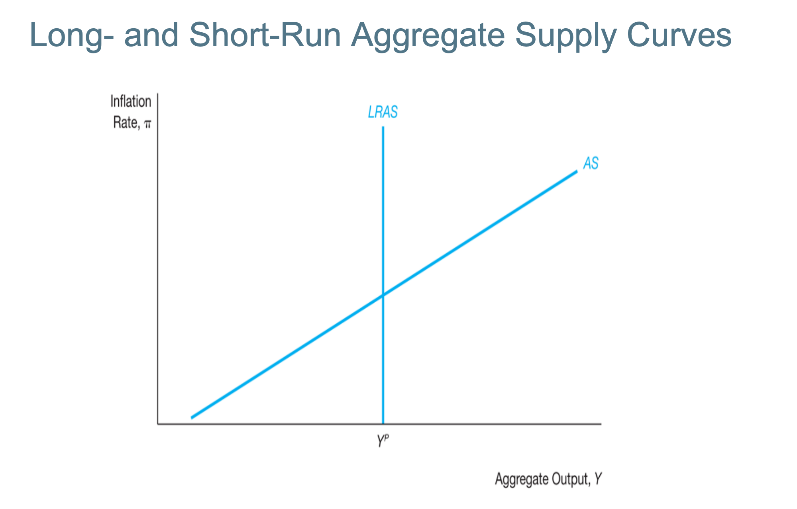

$$ Y^{ad} = C + I + G + \text{NX} $$
$$ \pi \uparrow \rightarrow r \uparrow \rightarrow I \downarrow \rightarrow Y^{ad} \downarrow $$
Shows the relationship between the inflation rate and the real interest rate
Shows the relationship between real interest rate and GDP
Combines the two above, and it shows a negative relationship between inflation rate $\pi$ and GDP $y$.
$$ Y = \frac{\bar{A}}{1 - c} - \frac{d + x}{1 - c}(\bar{r} + \lambda\pi) $$ where, $$ \bar{A} = \bar{C} - c\bar{T} + \bar{I} - d\bar{f} + \bar{G} + \bar{NX}$$
Therefore changes in $\bar{A}$ will shift the demand curve. The first term is affected by the IS curve. The first one is affected by Fiscals policy. (Fiscal policy refers to the government’s use of spending and taxation to influence the economy.) The second term is affected by the change in Monetary Policy.
Factors that shift AD to the right:
At the long run: Labour (L) is at full employment
 Note that the Potential DP where unemployment rate = natural unemployment rate (full employment) is where the $LRAS$ curve is.
Based on the idea that 3 factors that generate $\pi$ in any economy
$\uparrow P$ (Price Level) $\implies$ Workers Expect Adjustment to Nominal Wages ($\uparrow w_n$) $\implies$ Increase in Inflation Expectation (one for one increase) $\uparrow \pi^e$
Now, since $w_n = w_r + \pi^e$, then assuming the real wage is a constant. Remember meet important production cost: WAGES!
$$\uparrow \pi^e \implies \uparrow \pi $$ This is another channel that is going to chage as well.
The difference between the level of GDP (we observed) and the potential GDP $$ \text{Output Gap} = Y - Y^P $$ ,where
Three Situations
Facing shocks outside of the economic system. Boeing shock may affect any upstream or downstream producers.
Restriction of supply of oil $\implies$ increase the price of oils $\implies$ increase price of other goods and services (not oil producing countries) $\implies$ $\uparrow \pi$ Increases in Inflation. Hence $$ \uparrow P_{\text{Imported Goods tah used as Input}} \implies \uparrow P_{\text{Goods & Services}} \implies \uparrow \pi $$
Strong Labour Unions $\implies$ Implies increase in wages by too much $\implies$ Significant increase in price levels $\implies$ Increase in inflation.
$$ \pi = \pi^e + \gamma(Y - Y^P) + \mathcal{p} $$
Therefore, increase or decrease in the output gap $\implies$ increase or decrase inflation rate. This mainly ties with having tight or slack labour market. Hence, this will adjust the inflation expectation and SARS will shift according to how inflation expectation would change.
Long-term equilibrium is achieved when the AD, SRAS, and LRAS intersects together.
Note that if the predicted output and current output does not match, short-term equilibrium must moves.
If short-run equilibrium is larger then potential production, then we have a positive ouput gap. Note that this would lead to a tight labour market, and hence an increase in price level as the demanded wages and the cost of production would increase. Therefore, the inflation would increase and the inflation expectation would also increase. Then, the increase in inflation expectation implies the SRAS will shift up.
Now, note that the short-term equilibrium (intersection between SRAS and AD) will shifts left, towards the predicted output even though it might not be exactly on the long-run equilibrium point. Therefore, eventually, the inflation point will eventually equal to the long-run equalibrium (intersection between LRAS and AD).
This process is called a self-correction mechanism and will forced the changes. Therefore, it is impossible to stay away from the long-run equilibrium for a long time. However, we don't know how long it will take to achieve the equilibrium. Therefore, CB will prefer intervention in order to speed up the process.
Positive AD Shock => AD shift right This would then by putting the the AD curve goes up and shifts the short-term equilibirum right and the auto-correction mechanism will be shifting the long-term equilibrium interest rate up. However, this does not happen right away. However, this still requires a latency for the self-correction mechanism to perform the action.
Similar to above, we can shift the AD to the left (negative AD shock). This would cause the short-term equilibrium be on the left of the long-run equilibrium. This would then eventually be shifting the inflation rate down by the self-correcting mechanism.
Want to decrease inflation. => OPS (contractionary) => higher interest rate => increase in real interest rate => decrease in inflation rate.
Now, the AD curve moves down, then the GDP is far left to the $Y^P$. Then, there was a slack labour market => decrease in nominal wage => decrease in price level => decrease in inflation rate => decrease inflation expectation => shifting the SRAS down.
Note that this does not quantify how much it should go, but simply a graph drawing exercise.
The relationship between inflation rate and unemployment rate ($u$). Note that the equation is highly similar to aggregate supply but just linking to different things. $$ \pi = \pi^e - w(u-u_n) + \rho $$
Hence, increase in inflation expectaion increases the inflation rate.
Note that Okun's Law: $$ u - u_n = \frac{1}{2}(y - y_P) $$
Hence, the SRAS can be expressed similarly with the gap in unemployment rate.